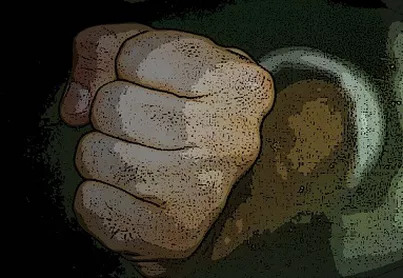

Yat Gee Chon Choi
Por Thomas Pinheiro
A estrutura do cotovelo para o sistema wing chun é básica, e o aprendizado do soco vertical (yat gee chon choi) é um dos principais exemplos disso, não só pelo caráter técnico de servir como defesa simultânea com ataque, mas no que possibilita o aprendizado das famílias de técnicas do estilo, já que o movimento do cotovelo é o mesmo realizado para outros bloqueios e também para outros tipos de ataque de punho e palma, além da necessidade de se aprender a socar sem mexer o ombro, o que faz com que se trabalhe exatamente a área do braço responsável por este tipo de técnica.
Em aplicação, o fato de se mexer o ombro causa um desequilíbrio corporal, que pode ser muito bem aproveitado pelo oponente. Quando há o mexer do ombro, com tensão, há a perda da energia para a explosão, ou seja, a energia que percorre o corpo não chega ao ponto de contato do ataque, no caso do soco, ao punho.
Em vez da força de explosão ocorre muito mais um empurrão. O yat gee chon choi, é conhecido como soco vertical, devido ao punho posicionar-se verticalmente, ou soco flecha, por se movimentar em linha reta do ponto de partida ao ponto de chegada, assemelhando-se a uma flecha disparada. A força deste soco está no trabalho de relaxamento e flexibilidade muscular, juntas, tendões e do alinhamento ósseo.
O punho fechado adequadamente e o pulso com flexibilidade e firmeza ao final do movimento também são de suma importância, treinados na posição de sau kuen. A área de contato não se restringe apenas às juntas dos dedos, mas também às falanges. Com o tempo, a Força do soco é aumentada através de treino diferenciado no ar, e com saco de parede, que influência no fechar do punho, além de se acrescentar a rotação da postura (chor ma), em aplicação, gerando ainda mais potência no soco.
Como aplicação o soco vertical é utilizado simultaneamente junto a alguma técnica de bloqueio ou como o próprio bloqueio, chamado de kuen siu kuen (soco contra soco). Soma-se também ao yat gee chon choi movimentações, de dentro para fora e de fora para dentro.
Dentro dos princípios do estilo Wing Chun, se utiliza o soco com uma potência máxima; porém mantendo-se equilíbrio, a colocação de extrema força em um golpe sem estrutura correta traz grande desequilíbrio ao atacante caso haja um bloqueio inicial, ou uma esquiva, permitindo ao oponente uma condição de reação, porém isso não quer dizer que o soco deva ser sem potência, ao contrário, dever rápido e causar sempre efeito ao adversário.
Normalmente o soco vertical é demonstrado como soco de uma polegada (chon ging kuen, uma versão do soco vertical a uma distância de uma polegada), quando realizado em demonstrações, a pessoa (utilizando-se de protetor) que recebe o ataque é deslocada para trás.
É bom esclarecer que este deslocamento ocorre de forma exagerada em demonstrações, com finalidade de não se receber danos pelo impacto, pois o tipo de energia concentrada num ataque curto faz com que a pessoa que receba a pancada sinta um enorme calor interno na área afetada e quanto maior a resistência, maior o dano interno causado (em situação real a pessoa desaba, se curva no seu próprio ponto).
No Wing Chun a preocupação é estar sempre de posse da linha central, e obviamente atacando. O yat gee chon choi é fundamental, pois cumpre todos os papéis, sem utilizar muito esforço físico, já que não depende de massa muscular e sim de músculos longilíneos.